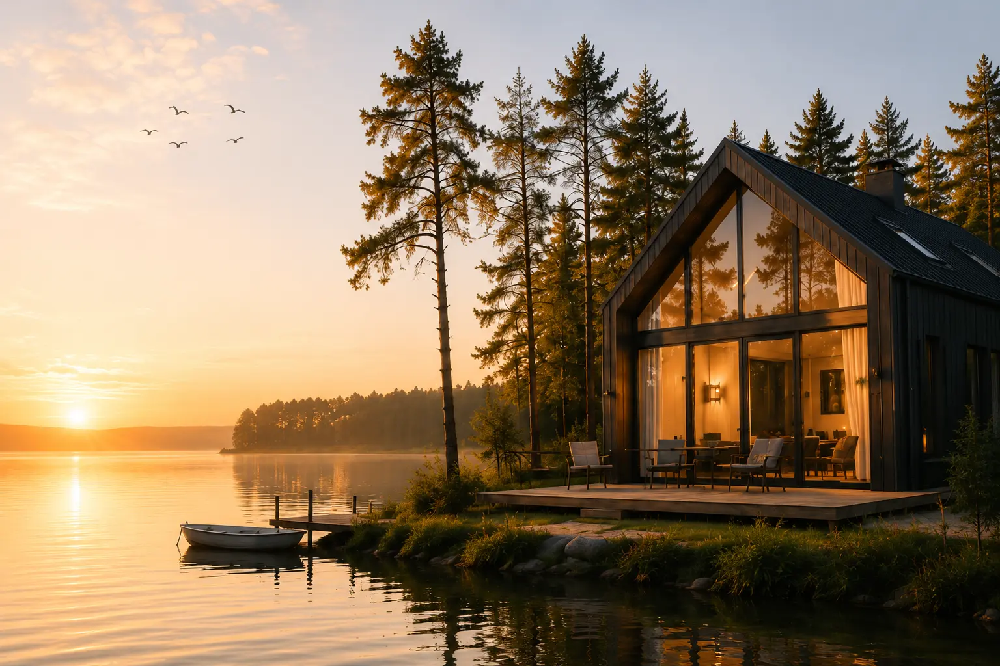
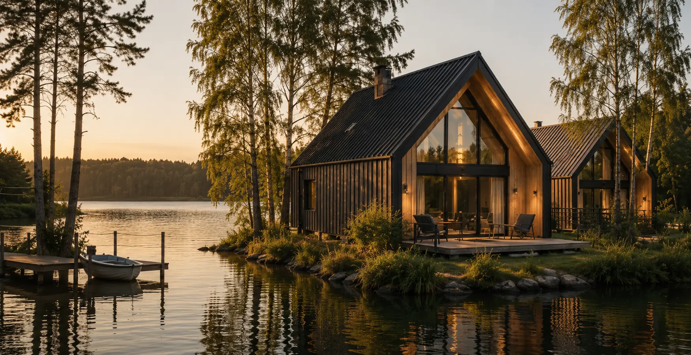
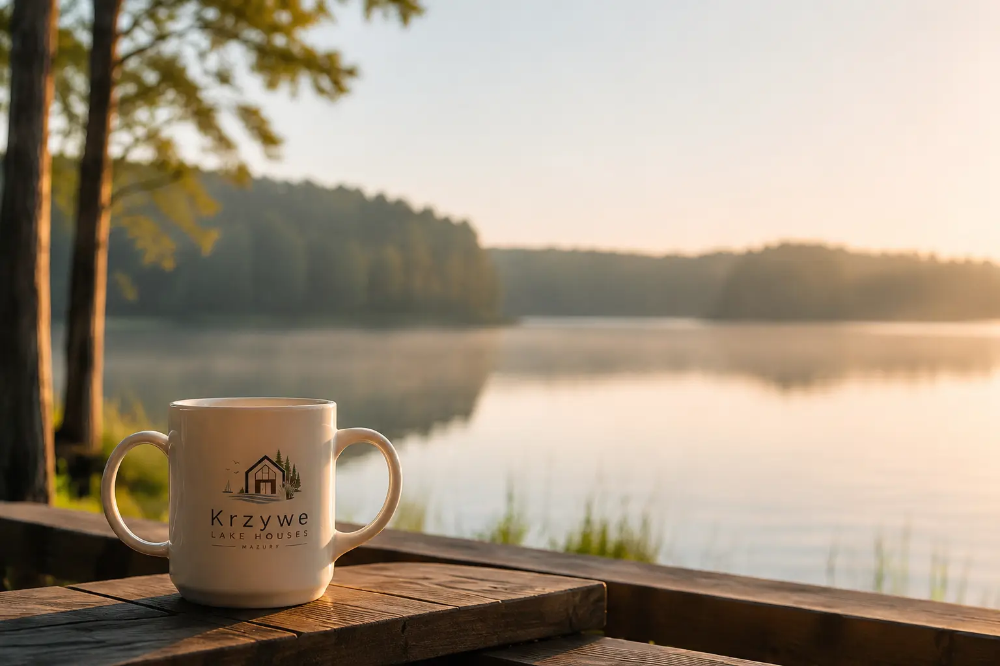
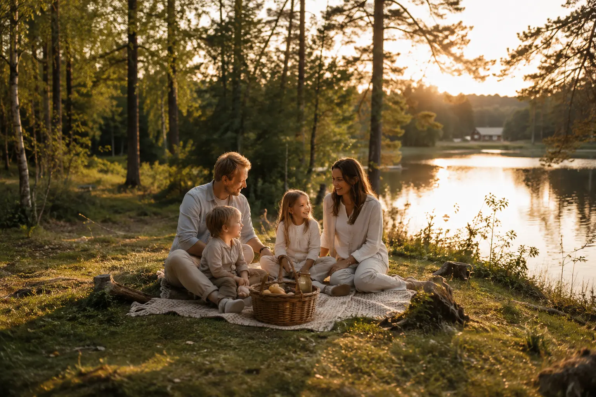
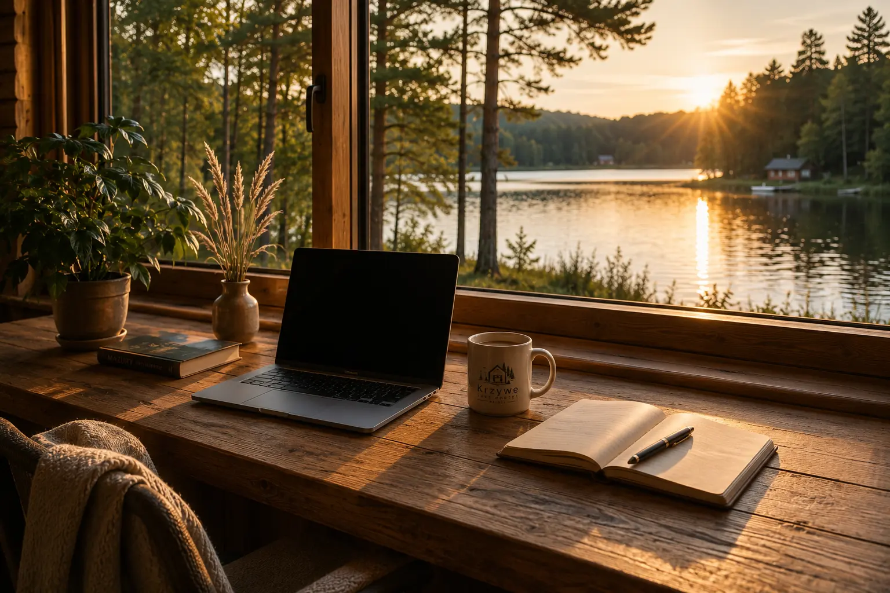

Jezioro bez dojazdów
Poranna kawa, kąpiel, SUP i zachód słońca dzieją się tuż za domem.

Krzywe · Mazury · pierwsza linia jeziora
Całoroczne domy wakacyjne nad Jeziorem Krzywe — dla rodzin, przyjaciół i grup, które chcą być blisko wody, natury i siebie.
Własny rytm nad wodą
Krzywe Lake Houses to dwa całoroczne domy na wynajem przy samej linii Jeziora Krzywe. Z tarasu schodzisz bezpośrednio do linii brzegowej i pomostu, a każdy dzień możesz ułożyć dokładnie po swojemu.
Poranna kawa, kąpiel, SUP i zachód słońca dzieją się tuż za domem.
Wiosenne poranki, długie lato, złota jesień i cicha zima mają tu własny klimat.
Piecki, Mrągowo i Mikołajki są w zasięgu krótkiej wycieczki samochodem.


Domy stworzone do bycia razem
Każdy dom mieści do 10 osób i ma cztery sypialnie, trzy łazienki, jasną część dzienną, kuchnię oraz prywatny taras. Możesz wynająć jeden budynek albo oba — dla grupy do 20 osób.
Rytm dnia
Przełącz porę dnia i zobacz, jak naturalnie zmienia się pobyt nad samą wodą.

Wyjdź na taras, usiądź przy wodzie i pozwól, żeby plan dnia ułożył się sam.

Kajak, SUP, spacer, rower lub wycieczka do Mrągowa i Mikołajek — wybór należy do Ciebie.

Kolacja na tarasie, rozmowa przy ogniu i jezioro, które powoli cichnie razem z dniem.
Dom dopasowany do wyjazdu
Wspólna przestrzeń działa inaczej dla rodziny, grupy przyjaciół i osób, które po prostu potrzebują zwolnić.

01 · rodzinyWspólny salon i osobne sypialnie, plażowanie bez pakowania samochodu.
Oferta rodzinna 02 · grupyDo 20 osób, dużo miejsca na wspólne chwile i przestrzeń na odpoczynek.
Oferta dla grup
03 · slow & workWi-Fi, cisza i natura za oknem — na reset lub kilka spokojnych dni pracy.
Zobacz możliwościCztery pory nad jeziorem
 Marzec – maj
Marzec – majŚwieża zieleń, puste szlaki i pierwsze długie śniadania na tarasie.
 Czerwiec – sierpień
Czerwiec – sierpieńJezioro od rana do wieczora, aktywność i najdłuższe zachody słońca.
 Wrzesień – listopad
Wrzesień – listopadCiepłe światło, lasy pełne kolorów i wieczory spędzane bliżej domu.
 Grudzień – luty
Grudzień – lutyNajwięcej ciszy, rozgrzane wnętrza i krajobraz, który naprawdę odpoczywa.
Spokojna baza do odkrywania Mazur
Krzywe Lake Houses leży nad Jeziorem Krzywe na Pojezierzu Mrągowskim. Możesz zostać nad jeziorem albo ruszyć po najciekawsze miejsca regionu.
Pobyt bez niedomówień
Najczęstsze pytania
Krótko i konkretnie: pojemność domów, zasady pobytu i dostęp do jeziora.
505 586 950Każdy z dwóch domów mieści do 10 osób. Wynajmując oba budynki, można zorganizować pobyt grupy do 20 osób.
Tak. Domy stoją w pierwszej linii Jeziora Krzywe. Goście mają dostęp do linii brzegowej i pomostu przy obiekcie bez konieczności dojazdu.
Tak. Oba domy są całoroczne i przygotowane na pobyty wiosną, latem, jesienią oraz zimą.
Nie. Zwierzęta nie są akceptowane. W domach obowiązuje także całkowity zakaz palenia.
Najszybciej przez formularz kontaktowy lub telefonicznie pod numerem 505 586 950. Podaj termin, liczbę osób i wybrany wariant domu.
Twój czas nad Jeziorem Krzywe
Wybierz jeden dom dla rodziny albo dwa dla większej grupy i zapytaj o dostępny termin.